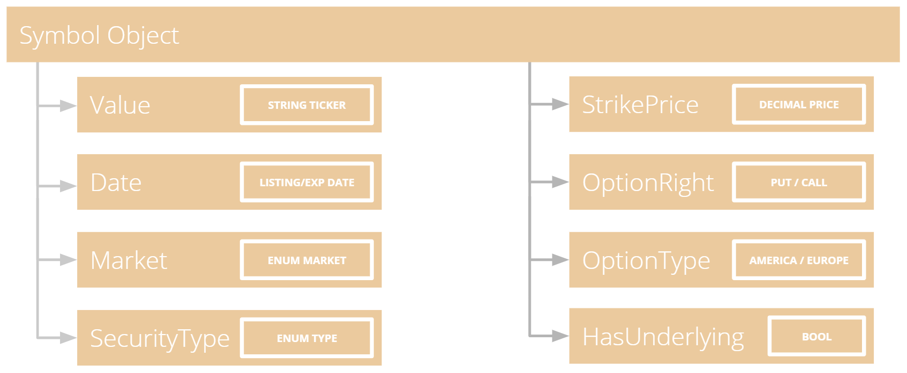

Введение
Symbols — это способ уникальной идентификации актива. Это объекты, которые содержат всю информацию, необходимую для идентификации ценной бумаги, без необходимости использования внешних ссылок или поиска в собственной базе данных. Символы были реализованы в проекте с открытым исходным кодом LEAN как способ идентификации или «отпечатков пальцев» торгуемых активов, чтобы не требовался дополнительный поиск в базе данных.
Все методы API алгоритма QuantConnect и LEAN используют символы для идентификации актива для торговли.
Что такое Symbol?
Symbols имеют несколько общедоступных свойств, которые можно использовать для уникальной идентификации актива. При сериализации вместе этот класс позволяет однозначно идентифицировать миллионы различных объектов активов.

Symbol.Market # Market USA, FXCM, GDAX, Bitfinex, Oanda. Liquidity venues.
Symbol.SecurityType # Security Types include Equity, Option, Future, Forex, Crypto and Cfd.
Symbol.OptionType # American or European Option.
Symbol.OptionRight # OptionRight indicates if a Put or Call.
Symbol.Date # Earliest listing date if equities, expiry for future/option.
Symbol.HasUnderlying # Is a derivative asset with another underlying asset.Все эти данные закодированы в объект символа. QuantConnect делает все возможное, чтобы скрыть детали этого от вашего алгоритма, но иногда вы можете увидеть, что он приходит в виде закодированного хэша, например: AAPL R735QTJ8XC9X. Первая половина закодированной строки представляет собой первый тикер, под которым был указан AAPL, другие буквы в конце строки представляют другую информацию об активе (тип ценной бумаги, дата листинга, дата истечения срока действия, страйк и основная биржа).
Добавление ценных бумаг
Когда вы вручную запрашиваете данные с помощью методов AddSecurity()/AddEquity(), QuantConnect предполагает, что вы добавляете тикер «сегодня», и автоматически ищет первый тикер, с которым указан актив. Используя приведенный выше пример Google:
self.goog = self.AddEquity("GOOG").Symbol
self.Debug(self.goog.ID) # Prints "GOOCV VP83T1ZUHROL"
self.Debug(self.goog) # Prints Your Reference "GOOG"Чтобы получить доступ к эталонному значению для символа, вы можете использовать свойство Symbol.Value, которое возвращает строковый тикер, который вы использовали для добавления данных в свой алгоритм (например, «GOOG» в нашем примере).
Символы и Тикеры
Тикеры — это строковое представление шорткода для актива. Некоторые примеры популярных тикеров включают «AAPL» для корпорации Apple или «IBM» для корпорации International Business Machines. Эти тикеры часто меняются при ребрендинге компании или при слиянии с другой ценной бумагой.
Тикер актива — это не то же самое, что символ. Объекты символов являются постоянными и отслеживают основной объект. Когда компания проводит ребрендинг или меняет свое название, объект QuantConnect Symbol остается неизменным, что дает алгоритмам возможность надежно отслеживать активы с течением времени.
Тикеры также часто повторно используются различными брокерскими конторами. Например, Coinbase, ведущая крипто-брокерская компания США, размещает тикер «BTCUSD» для торговли. Его конкурент Bitfinex также перечисляет «BTCUSD», и оба они торгуются в QuantConnect. Символы позволяют нам определить, на какого маркет-мейкера вы ссылаетесь.
Технология Symbol Cache
Чтобы упростить использование API, QuantConnect создал технологию под названием Symbol Cache, которая принимает строки и пытается угадать, какой объект Symbol вы могли бы иметь в виду. Из-за этого многие методы могут принимать строку, такую как «IBM», вместо полного объекта символа. Мы настоятельно рекомендуем вам не полагаться на эту технологию и вместо этого сохранять явные ссылки на ваши ценные бумаги, когда это необходимо.
# Example 1: Relying On Symbol Cache:
self.AddEquity("IBM") # Add by IBM string ticker, save reference to Symbol Cache.
self.MarketOrder("IBM", 100) # Determine refering to IBM Equity from Symbol Cache.
self.History("AAPL", 14) # Makes a guess referring to AAPL Equity.
# Example 2: Correctly Using Symbols:
self.ibm = self.AddEquity("IBM").Symbol # Add IBM Equity string ticker, save Symbol.
self.MarketOrder(self.ibm, 100) # Use IBM Symbol in future API calls.
self.aapl = Symbol.Create("AAPL", SecurityType.Equity, Market.USA)
self.History(self.aapl, 14)Декодирование Symbols
Когда символ сериализуется в строку, он будет выглядеть примерно так: SPY R735QTJ8XC9X. Эта строка, состоящая из двух частей, представляет собой набор данных в кодировке base64. Кодирование всех свойств в краткий формат обеспечивает плотную коммуникацию, не требуя стороннего списка или поиска.
В большинстве случаев вам не нужно будет работать с этими закодированными строками. Однако QuantConnect предоставляет метод десериализации объектов Symbol в легко используемые объекты для использования API. Вы можете использовать этот метод, как показано ниже:
google = self.Symbol("GOOCV VP83T1ZUHROL")
print(google.ID.Market) # USA
print(google.SecurityType) # Equity
print(google.Value) # GOOCVСвойство Market используется для различения тикеров с одинаковым строковым значением, представляющих разные базовые активы. Ярким примером этого являются различные маркет-мейкеры, которые имеют разные цены на EURUSD. QuantConnect хранит эти данные отдельно, и, поскольку они имеют разные цены исполнения, мы рассматриваем места исполнения как разные рынки.
Ограничения Symbol
Недостатком Symbols является то, что он требует знания исходной строки тикера листинга. В приведенном выше примере первоначальный тикер GOOCV в конечном итоге переименовывается/сопоставляется с C-акциями класса GOOG. QuantConnect также работает над поддержкой других методов идентификации (CUSIP/ISIN/Open-FIGI), но на данный момент символы обеспечивают уникальную идентификацию и бесплатное распространение проекта LEAN без ссылок на внешние данные.